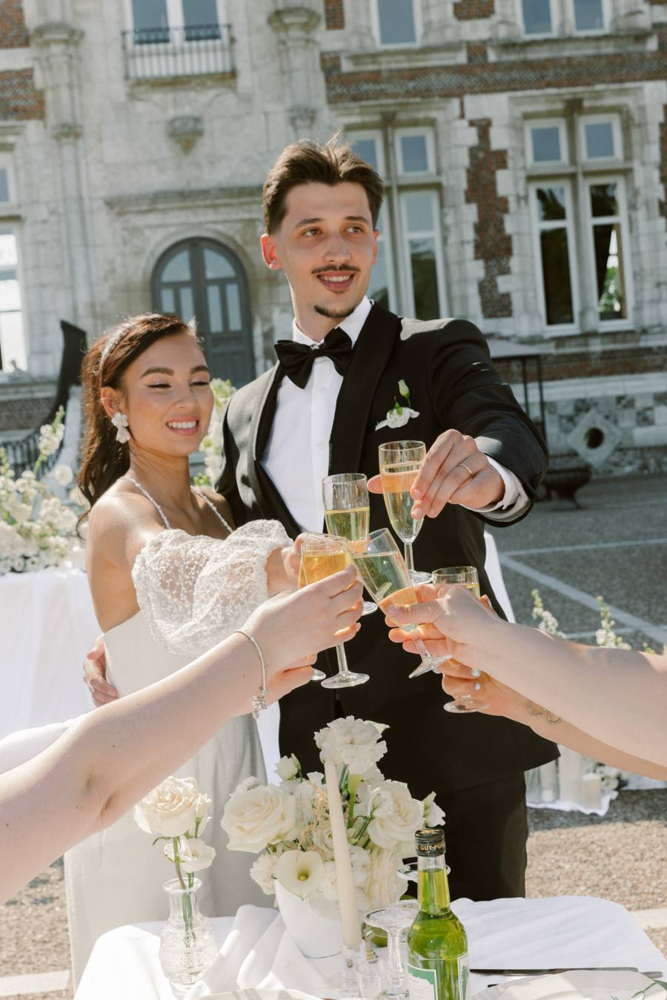
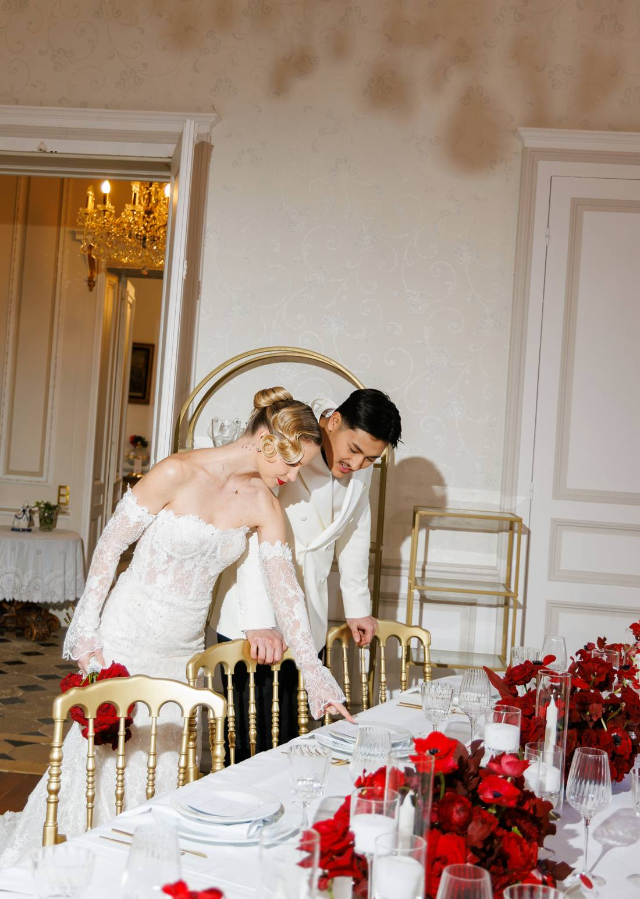
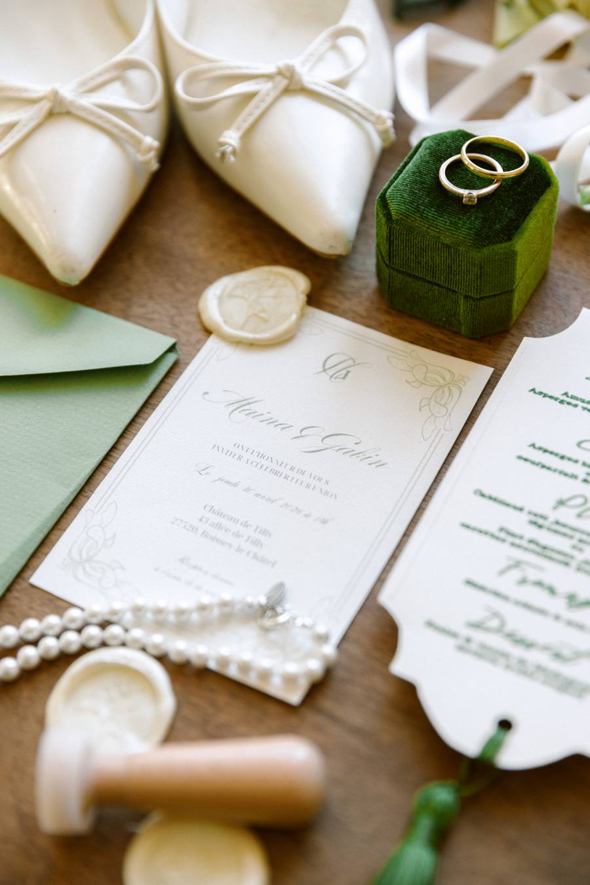

‹ Précédent
2 / 10 · Sommaire
Suivant ›
Mercredi 11 novembre
Bonsoir Régis
3
mariages
412
invités
7
ce soir
Vos mariages

J − 213
91%
Camille & Arthur
12 juin 2027 · Château de Vaux
Liste d'invités · étape 2

J − 297
64%
Inès & Louis
4 septembre 2027 · Chantilly
Premier contact · étape 3

J − 554
22%
Sarah & Tom
18 mai 2028 · Saint Émilion
Fiche du mariage · étape 1
Ce soir
Appel avec Camille & Arthur
19 h 30 · appel guidé · 9 fiches
Signaler un souci
Une phrase suffit. Nous joignons nous mêmes l'écran, la version 1.5.0 et votre appareil.
Annuler
Envoyer
Merci, c'est transmis
La correction vous sera proposée en test avant toute mise en ligne.
‹ Précédent
2 / 10 · Sommaire
Suivant ›